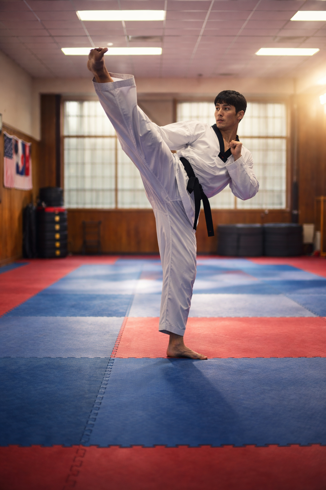
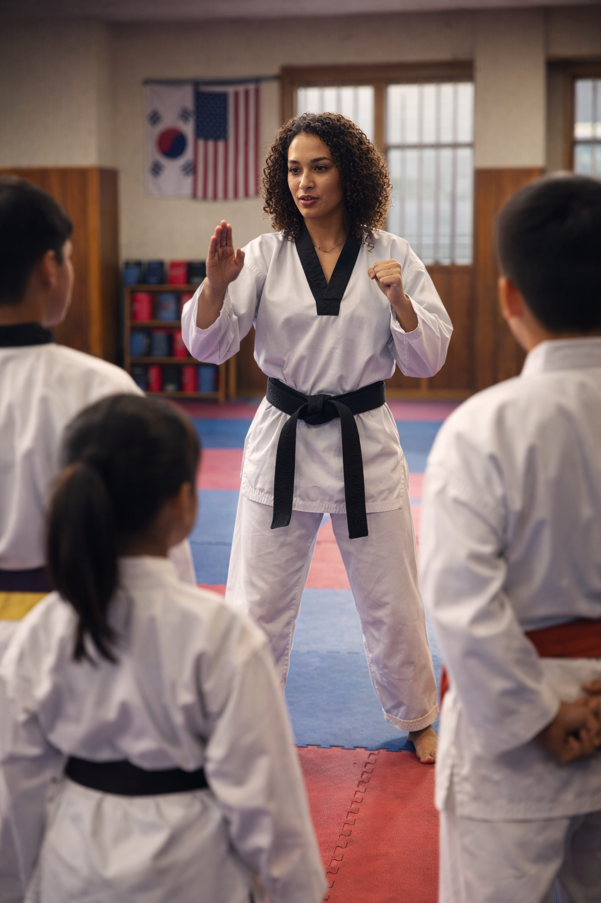
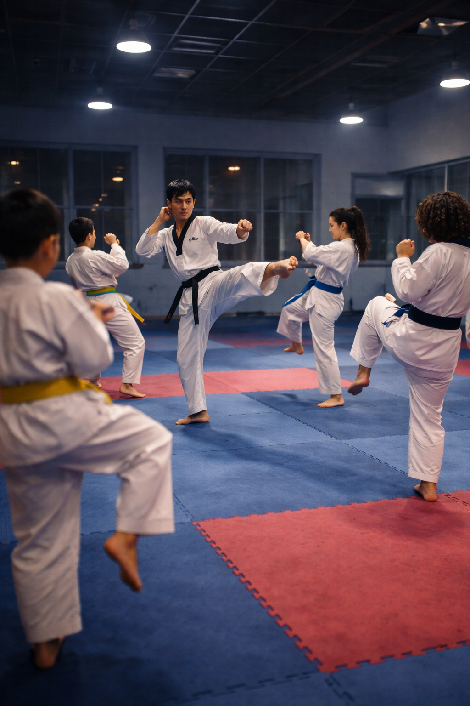
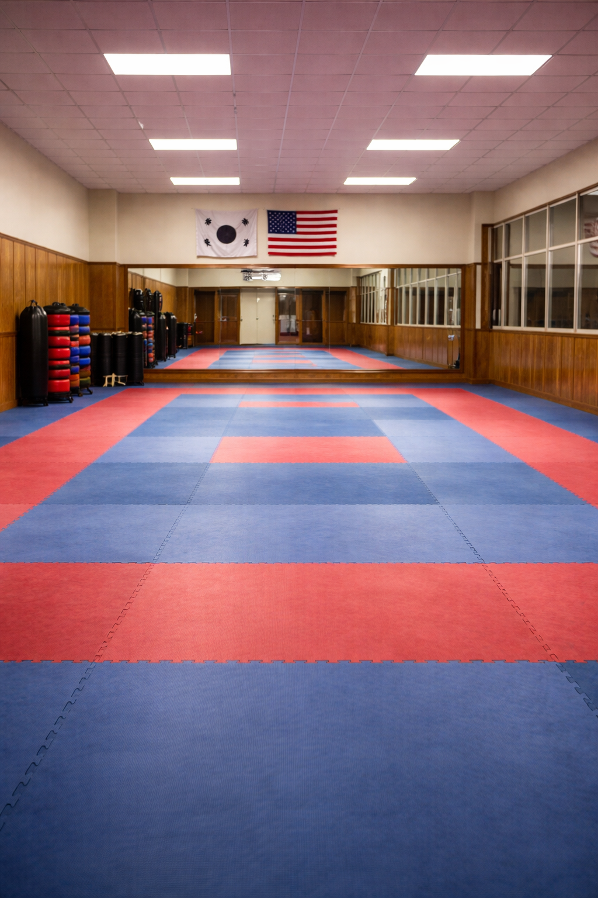
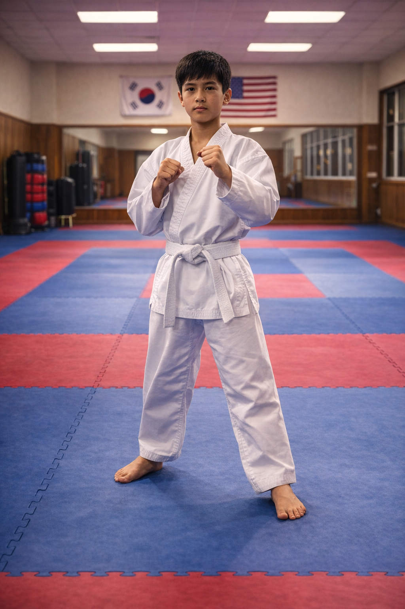
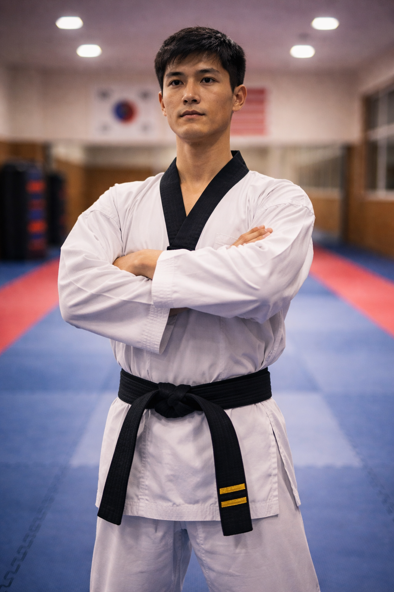

What is Taekwondo?
Taekwondo is a Korean martial art that focuses on high, fast kicks, discipline, and self-defense. It combines physical training with mental focus and respect for others.
It is practiced worldwide and is even an Olympic sport. Taekwondo emphasizes balance, coordination, and control while teaching important life skills.

AI prompt: “photorealistic taekwondo athlete performing high kick in dojang”
Who I Am
I personally trained in Taekwondo for 7 years and worked as an instructor for 5 years, helping students improve their skills and build confidence.
It taught me discipline, patience, and leadership.

AI prompt: “taekwondo instructor teaching students in class”
When to Train
Taekwondo training usually takes place in the evenings or on weekends, depending on the class schedule. Consistent practice is important for improving technique and strength.
Many students train multiple times a week to prepare for belt tests, competitions, or personal fitness goals.

AI prompt: “martial arts class training at night indoors”
Where to Practice
Taekwondo is practiced in dojangs, which are martial arts training studios designed with padded floors and open space for movement.
Training can also take place at home or outdoors, but dojangs provide the best environment for structured learning and instruction.

AI prompt: “clean martial arts studio with mats and mirrors”
How to Get Started
To start Taekwondo, beginners usually join a local dojang and enroll in beginner classes. These classes teach basic stances, kicks, and forms.
Students wear a uniform called a dobok and progress through belt levels as they develop their skills and knowledge.

AI prompt: “beginner taekwondo stance tutorial pose”
Why Taekwondo Matters
Taekwondo builds confidence, discipline, and physical strength. It helps individuals develop focus and resilience while improving overall health.
For me, Taekwondo has been more than just a sport. It has shaped my mindset, taught me perseverance, and helped me grow as both a leader and an individual.

AI prompt: “confident martial artist standing strong in uniform”
AI Prompts
This page was created with AI assistance for image generation, content planning, and section ideas.
AI model used: ChatGPT / DALL·E
- “photorealistic taekwondo athlete performing high kick in dojang”
- “taekwondo instructor teaching students in class”
- “martial arts class training at night indoors”
- “clean martial arts studio with mats and mirrors”
- “beginner taekwondo stance tutorial pose”
- “confident martial artist standing strong in uniform”
- “Create content for a taekwondo hobby website with who, what, when, where, how, and why sections”